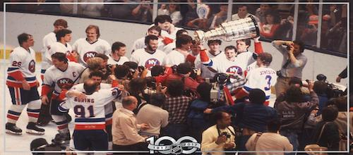

The New York Islanders are a professional ice hockey team based in New York City. They are members of the Metropolitan Division of the Eastern Conference of the National Hockey League (NHL). The team plays its home games at Barclays Center, located in the borough of Brooklyn. The Islanders are one of three NHL franchises in the New York metropolitan area, along with the New Jersey Devils and New York Rangers, and their primary geographic fan base resides on Long Island.

The team was founded in 1972 as part of the NHL’s maneuvers to keep a team from rival league World Hockey Association (WHA) out of the newly built Nassau Veterans Memorial Coliseum in suburban Uniondale, New York.
In the 1980s the Islanders advanced to five consecutive Stanley Cup finals behind a core of future Hall-of-Fame players including goaltender Billy Smith, defenseman Denis Potvin, right wing Mike Bossy, centre Bryan Trottier, and left wing Clark Gillies. That young group (all but Smith were no older than age 25 at the start of the 1979–80 season) played with postseason poise that belied their youth, losing just three games over the course of their first four Stanley Cup finals and defeating the Philadelphia Flyers, Minnesota North Stars, Vancouver Canucks, and Edmonton Oilers, respectively, to capture four straight NHL championships from 1979–80 to 1982–83. The team finally lost in its fifth appearance in the Stanley Cup finals in 1983–84, a symbolic passing of the torch to a burgeoning Oilers dynasty. New York continued to qualify for the playoffs into the late 1980s, but the team—led by centres Pat LaFontaine and Brent Sutter by the end of the decade—failed to advance any farther than the second round of the postseason during this period.
Barring a surprising trip to the conference finals in 1992–93 behind the play of centre Pierre Turgeon, the 1990s were a bleak time for the franchise. The Islanders finished in last place in their division five times during the decade and eight total times in the 13 seasons from 1988–89 to 2000–01. The team returned to the postseason in 2001–02. New York made four trips to the playoffs from that season to 2006–07, but the team lost in the opening round each time. In 2007–08 the Islanders returned to the bottom of the divisional standings. After posting five consecutive last-place finishes, the team was led back to the postseason by young star centre John Tavares in 2012–13 but lost in the first round. The turnaround was short-lived, however, and the Islanders finished the 2013–14 season last in their division. The team again rebounded the following year to post the franchise’s first 100-point season since 1983–84 only to again lose in the first round of the playoffs. The Islanders returned to the playoffs in 2015–16, and the team won its first postseason series in 22 years before being eliminated in the second round.